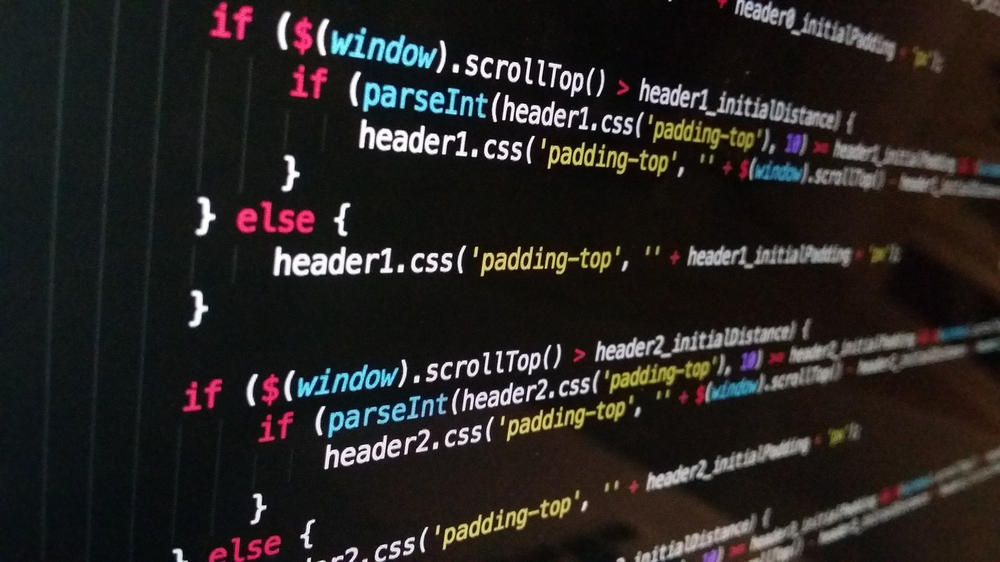

Including Constructs, Variables, Modularity and IDEs
There are three main constructs: Sequence, Selection and Iteration
Sequence means the computer will run your code in order, one line at a time from the top to the bottom of your program.
Selection is where the flow through a program is interrupted and control is passed to another point in the program. The decision is based on a boolean expression. Comparisons eg. == or >= are used to select which code to run (where to branch). Selection is also known as branching.
Iteration is used to repeat certain sections of code either indefinately or until a certain condition is met (definate). There are many types of iterative statements in high level languages including FOR loops, while loops and do while loops. Recursion is another way of iterating code until finished. This is done when a procedure or function calls itself. It is a computing strategy where a problem is broken down into small component parts of the same type then solved in a simple way. The results of the solution are then combined together to give the full solution. The strategy is sometimes also known as 'divide and conquer'. When writing recursive procedures, it is important to make sure that there is an end point, to avoid an endless loop to avoid a stack overflow.
A variable is a location in memory that holds one or more values. That location is given a name (identifier) by the programmer. The software code uses this name to modify the contents of the RAM location(s) being referenced. For example an array variable would have many RAM locations to hold its entire data set. In the case of an array, these memory locations are contiguous. The visibility of a variable is called its ‘scope’. Scope can be local or global.
Global variables are variables which are in the global scope (can be accessed by the whole program). A global variable is usually declared or initialised outside of any functions or procedures. Global variables are useful as they can be accessed and modified by the whole program, reducing the need for parameter passing and reducing memory usage as the variable needs only to exist once. On the other hand, global variables can be modified by any part of the code which means that one may encounter unwanted modifications, which may take a long time to find and fix. Generally, the use of global variables should be avoided!!!
A local variable is one which is available in a local scope only. For example, a variable declared in a procedure could not be used in a different procedure as it would be out of scope. If a local variable has the same name as a global variable it is used instead of the global variable when in scope. Local variables cannot be affected by any other part of the software and so it is easy to find a problem within the subroutine. On the other hand, local variables may lead to extra memory usage and once a procedure or function has finished executing, the local variable is deleted from memory.
Modular programming is a technique in which the various functions of a program are separated into independent modules which are able to operate independently of the main program. For example, in a program, there could be a module for the UI, a module for a certain function and another module for a different function. The advantage of this is that modules can be developed separately and can be used in other programs. A library is an example of a module as it is self contained. Modules can be identified by using a top-down structure chart in order to identify modules and sub-modules. A module is broken down internally into smaller tasks called ‘procedures’ or 'functions'.
A procedure has a specific task to perform, the module needs a collection of procedures in order to fulfil its overall purpose. Each procedure has a begin statement of some kind (often just an open curly bracket ( { ), it depends on the computer language being used. Each procedure will have an end statement of some kind (often a closing curly bracket, }). The main loop of the module is at the bottom which calls each procedure.
A function differs from a procedure because a function must return one value.
Parameter passing allows the values of local variables within a main program to be accessed, updated and used within multiple sub-programs without the need to create or use global variables. A main program is set up with local variables, and either the address of the local variable in RAM, or a copy of the value of the local variable can be passed to subprograms and functions when needed. The values passed in are called arguments. Parameters may be passed in two different ways: By reference and by value. If a programmer passes a parameter by reference, then the subprogram or function has direct access to the memory location holding the value of the variable. Eg. pointers in C. If a programmer passes a parameter by value, then a temporary second copy of the value of the variable is made and held in RAM. This copy can be changed within a subprogram but the change would not affect the original value held in the main program’s local variable. The main drawback of passing by value is the increased demand on RAM. As well as having to store the original value of the local variable, it is also necessary to store a second copy in main memory as well. The main advantage of passing by value is that the value of the original local variable is protected from accidental or unnecessary change.
An Integrated Development Environment (IDE) is software used to write code. To write code, all that is required is a text editor (my favourite is sublime text). If code needs to be translated, an assembler, compiler and interpreter will be required. IDEs generally include: - A text editor. - Facilities to automate building. - Debugging tools. - Features to help with coding eg. colour coding, auto indentation and code completion.
Code editor - The environment where the user can write code is called the shell. The code editor is a text edit area that allows developers to write, edit and save a document of code. It will also have features to assist with software development.
Runtime environment - This means that you can execute the program one step at a time. This is useful to test that the code is working line by line before creating the final complete program.
Code completion - Designed to save time while writing code. As you start to type the first part of a function, it suggests or completes the function and any arguments or variables.
Bracket matching - Used for languages that use pairs of brackets to mark out blocks of code. If you forget to close a bracket whilst writing, coloured sections may help you to detect missing brackets.
Syntax checking - Recognises the incorect use of syntax and highlights any errors.
Other features include: - Translator(Compiles or interprets code.) - Auto documentation(Explains the function and purpose of the code, e.g. by noting the modules and variables used, and its expected behaviour, and collates this into a text file that can be used by other developers to understand how and why the code was created.) - Libraries(Provide functions that are not included in the core part of the programming language. Can be imported and used at the start of the program code. Eg. stdio in C++). - Build automation(Saves time by automatically doing the processes that would otherwise be done by hand. These could include testing or compiling. Useful when a program has many thousands lines of code. Improves the quality of software) - Debugger(Detects errors, it may suggest what type of error it is and what line it is on.)